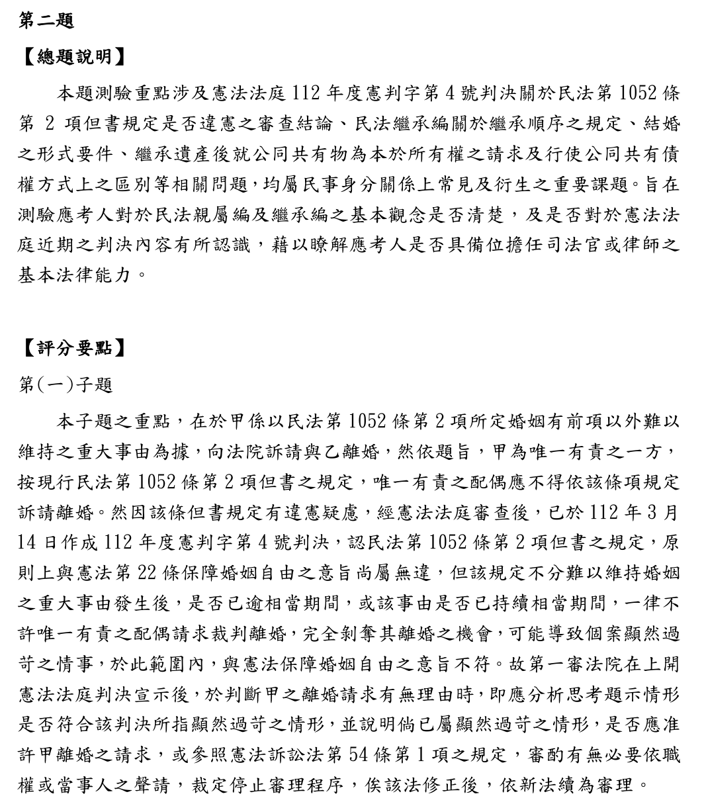
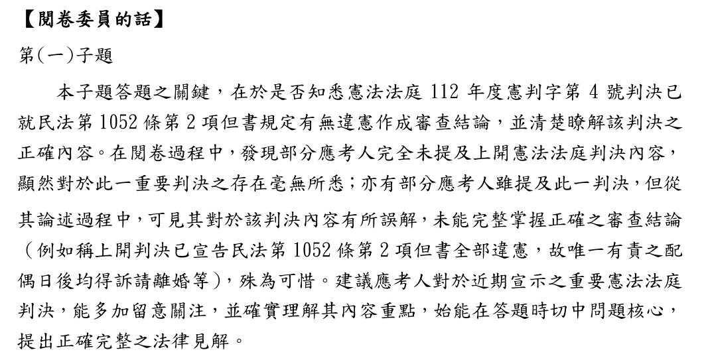

外遇離家20年，能先訴請離婚嗎？
112年律師第二試｜民法與民事訴訟法（一）｜第二題第（一）小題（25分）
題目
這一題有三個小題。本頁只做第（一）小題，用得到的事實畫黃色底線。
法院於112年5月30日為第一審判決，敗訴之一方已依法提起上訴，嗣甲於112年7月30日死亡，甲死亡後遺有A地、B屋（含基地），其遺產尚未分割。其中A地由庚無權占有並於其上擅自搭建C屋使用，B屋於甲生前即出租於辛，惟辛自111年7月1日起積欠租金，經甲屢次催告均置之不理，迄甲死亡時已積欠租金達新臺幣（下同）60萬元。
戊於甲死亡後於咖啡廳與網友壬見面，與壬甫結識2小時即決定結婚，壬當場書立結婚書約，因咖啡廳內只有店員一人且不願意擔任結婚證人，故壬外出覓得原不相識之路人癸、丑於結婚書約證人欄簽名，戊則於咖啡廳內等待壬取得證人簽名，再與壬持該結婚書約共赴戶政事務所辦理結婚登記，嗣戊於結婚登記翌日死亡。試問：
- （一）第一審法院為本案判決時，應如何判斷甲之離婚請求有無理由？（25分）本頁只做這一題
- （二）甲之遺產由何人繼承取得？戊之遺產由何人繼承取得？（25分）
- （三）丙是否得單獨對庚起訴，請求拆除C屋、返還A地？是否得單獨對辛起訴請求給付112年7月30日以前積欠之租金60萬元？（25分）
影片說明
影片依序示範：主播介紹、整題讀一遍並框出第（一）小題、四個人與時間軸、學弟學姊帶出三個問題、第1052條第2項的本文與但書、憲判字第4號、顯然過苛的天平、第一審判決時的修法期限、兩條路、後來的實務、三個易錯點，最後把擬答從頭看一遍。
人物與時間線
| 人 | 身分 | 本小題的角色 |
|---|---|---|
| 甲 | 丈夫，外遇離家 | 訴請離婚的一方，唯一有責 |
| 乙 | 妻子 | 抗辯甲唯一有責，仍期待甲回家，不願離婚 |
| 丙 | 甲、乙之子，已成年 | 判斷是否顯然過苛時的考量事實 |
| 丁、戊 | 甲的同居人、甲認領的兒子 | 說明婚姻破綻的原因；戊與第（二）小題有關 |
| 日期 | 事件 |
|---|---|
| 約20年前 | 甲外遇、離家與丁同居，與乙分居 |
| 111.06.01 | 甲訴請離婚 |
| 112.03.24 | 憲法法庭宣示112年憲判字第4號判決（考選部評分要點寫3月14日，憲法法庭網站與宣示公告都是3月24日） |
| 112.05.30 | 第一審判決：還在2年修法期限內 |
| 114.03.24 | 2年修法期限屆至（至2026年11月，第1052條第2項仍未修正） |
答題順序：三個問題
閱卷委員指出，答題關鍵在於是否知道憲判字第4號並正確理解；部分考生完全沒提，也有考生誤以為但書已經全部違憲、唯一有責配偶日後都能請求離婚。
先分清楚：請求權基礎與相關規範
| 規範 | 在本題的角色 |
|---|---|
| 民法第1052條第2項本文 | 請求依據：有難以維持婚姻之重大事由，夫妻一方得請求離婚 |
| 民法第1052條第2項但書 | 限制：事由應由一方負責者，僅他方得請求 |
| 憲法第22條、112年憲判字第4號判決 | 但書在「顯然過苛」範圍內與婚姻自由意旨不符，2年內修法 |
| 憲法訴訟法第54條第1項 | 參照：期限屆至前原則仍適用原規定，必要時得裁定停止審理 |
本題用到的條文與判決
先看要件，再套本案事實。原文中畫底線的部分，就是本題用到的那一句。
民法第1052條第2項：概括離婚事由（第①問）
有前項以外之重大事由，難以維持婚姻者，夫妻之一方得請求離婚。但其事由應由夫妻之一方負責者，僅他方得請求離婚。
白話婚姻已經破裂到難以維持，夫妻都可以請求離婚；但如果破裂是一方造成的，只有另一方可以請求。
| 要件 | 本案事實 | 結果 |
|---|---|---|
| 難以維持婚姻之重大事由 | 分居20年，幾無見面，僅就必要事項聯絡 | ✓ |
| 事由應由一方負責（但書） | 甲外遇並離家與丁同居；題示未見乙有可歸責之處 | ✓ 甲唯一有責 |
| 結果 | 依但書，僅乙得請求離婚 | ✕ 甲本不得請求 |
憲法法庭112年憲判字第4號判決（112.03.24宣示）主文節錄（第②問）
……其中但書規定限制有責配偶請求裁判離婚，原則上與憲法第22條保障婚姻自由之意旨尚屬無違。惟其規定不分難以維持婚姻之重大事由發生後，是否已逾相當期間，或該事由是否已持續相當期間，一律不許唯一有責之配偶一方請求裁判離婚，完全剝奪其離婚之機會，而可能導致個案顯然過苛之情事，於此範圍內，與憲法保障婚姻自由之意旨不符。相關機關應自本判決宣示之日起2年內，依本判決意旨妥適修正之。逾期未完成修法，法院就此等個案，應依本判決意旨裁判之。
白話但書本身可以存在；有問題的是「不管過了多久都一律不准」。那些期間要多長，判決說原則上由立法者決定。
注意不是整個但書都違憲，也沒有宣告但書失效。
最高法院113年度台上字第2256號民事判決（114.03.26）：怎麼判斷顯然過苛（第②問）
……倘有，應再審酌限制唯一有責之一方請求離婚是否顯然過苛，亦即須探知一方或雙方維持婚姻之意願，審酌該婚姻是否僅存外在形式，而無互愛或相互扶持依存之實質內涵（如有未成年子女，反不利長期處於上開狀態下之未成年子女身心健全發展），並應審酌難以維持婚姻之重大事由發生後，是否已逾或持續相當期間等，資以判斷不准離婚是否根本剝奪唯一有責一方之離婚自由而對其顯然過苛。倘若顯然過苛，自不得否准其離婚請求。
| 判斷要素 | 本案事實 |
|---|---|
| 雙方維持婚姻的意願 | 乙仍期待甲歸家；甲已離家20年 |
| 婚姻是否只剩形式 | 幾無見面，只就必要事項聯絡 |
| 重大事由是否已逾或持續相當期間 | 分居20年；丙已成年 |
| 結論 | ✓ 一律不准甲請求離婚，應屬顯然過苛 |
注意這是考試之後（114年）的判決，112年的考生不可能引用；本頁用它說明判斷要素。
憲法訴訟法第54條第1項（第③問）
判決宣告法律位階法規範定期失效者，除主文另有諭知外，於期限屆至前，各法院審理案件，仍應適用該法規範。但各法院應審酌人權保障及公共利益之均衡維護，於必要時得依職權或當事人之聲請，裁定停止審理程序，俟該法規範修正後，依新法續行審理。
白話憲法法庭給了修法期限時，期限到之前法院原則上照舊法判；但如果照舊法判會傷害人權，可以先暫停，等新法出來再審。
本題憲判字第4號不是宣告定期失效，而是要求2年內修法，所以只能「參照」本條，這也是評分要點的用語。
民法第1052條、憲法訴訟法第54條依全國法規資料庫現行條文核對（2026-11-20）。憲判字第4號、113台上2256 均已打開全文核對。
後來的實務：一件和考題很像的案子
| 日期 | 法院 | 結果與理由 |
|---|---|---|
| 112.04.19 | 臺灣臺中地方法院111年度婚字第25號 | 判准離婚（裁判書系統無法開啟全文，依後續判決記載） |
| 113.07.26 | 臺灣高等法院臺中分院112年度家上字第104號 | 駁回離婚 修法期限內：「依前揭憲法訴訟法第54條之規定，在二年期限屆至而民法第1052條第2項但書未修法前，法院仍應依原法律之規定加以裁判」 |
| 114.03.26 | 最高法院113年度台上字第2256號 | 期限屆至後：離婚部分廢棄發回，要求審酌是否顯然過苛 |
| 114.10.01 | 臺灣高等法院臺中分院114年度家上更一字第3號 | 維持准予離婚 |
| 114.12.11 | 最高法院114年度台上字第2264號裁定 | 上訴駁回，確定 |
本頁只查到修法期限內「仍照原規定裁判」的例子，沒有查到裁定停止審理的例子（未逐筆檢索全部裁判）。擬答依評分要點寫「宜裁定停止審理」，同時保留「未停止仍無理由」。
答題地圖
考選部評分要點與閱卷委員的話

評分要點寫判決日期為「112年3月14日」；憲法法庭網站與宣示公告都是112年3月24日，本頁以後者為準。
閱卷委員的話：
- 答題關鍵在於是否知悉憲判字第4號已就第1052條第2項但書作成審查結論，並清楚瞭解判決的正確內容。
- 部分考生完全未提這則憲法判決。
- 部分考生誤解判決內容，例如稱但書已全部違憲、唯一有責配偶日後均得請求離婚。

來源：考選部〈112年司法官、律師考試第二試法律專業科目評分要點與閱卷委員的話〉民法與民事訴訟法（一）第6至8頁，已轉成圖片逐頁核對。
擬答
甲為唯一有責配偶，本不得請求離婚；惟本件應屬顯然過苛之個案，第一審法院宜參照憲法訴訟法第54條第1項裁定停止審理，未停止而逕為判決者，仍應認甲之請求無理由。
一、甲依第1052條第2項但書不得請求離婚
甲、乙分居已20年，幾無見面，婚姻已有難以維持之重大事由。此事由係因甲婚外情並離家同居所致，題示未見乙有可歸責之處，甲為唯一有責之一方，依上開但書，僅乙得請求離婚。
二、本件屬顯然過苛之個案
（一）憲法法庭112年憲判字第4號判決認上開但書原則上與憲法第22條保障婚姻自由之意旨無違；惟其不分重大事由發生後是否已逾相當期間，或已持續相當期間，一律不許唯一有責配偶請求裁判離婚，可能導致個案顯然過苛，於此範圍內與憲法保障婚姻自由之意旨不符，並諭知2年內修法。
（二）是否顯然過苛，應探知雙方維持婚姻之意願，審酌婚姻是否僅存外在形式，及重大事由是否已逾或持續相當期間（113台上2256參照）。乙雖仍期待甲歸家，惟兩造分居20年，婚姻僅存形式，丙亦已成年，一律不許甲請求離婚，應屬顯然過苛。
三、第一審法院之處理
第一審判決時，上開2年期限尚未屆至。參照憲法訴訟法第54條第1項，期限屆至前，法院原則上仍應適用系爭規定，但得審酌人權保障及公共利益之均衡維護，裁定停止審理程序，俟修法後依新法續行審理。本件屬顯然過苛之個案，宜裁定停止審理；若逕為判決，仍應認甲之請求無理由。
擬答578字（含標題、標點與數字，不含空白，以程式計算）。25分題目參考上限561字（120分鐘×25/150＝20分鐘，扣讀題3分鐘，17分鐘×每分鐘約33字）；略超17字。
互動：判決的時間點不同，結論會怎樣？
本題的關鍵是「第一審在什麼時候判」。先自己想想，再點。
第二、三個分頁是本頁為了比較時間點所做的假設；期間天數由頁面程式計算。本頁推論
學說補充
有責配偶離婚與破綻主義的學說、各國分居期間的立法例，本頁尚未加入可核對的學說文獻。
預想易錯點
①②依閱卷委員的話整理，③依評分要點整理。
| 可能的錯誤 | 應該怎麼寫 |
|---|---|
| ① 完全沒提112年憲判字第4號 | 先寫但書，再寫憲判字第4號的審查結論。 |
| ② 以為但書已全部違憲，有責一方都能離婚 | 但書原則合憲，只有「一律不許、可能顯然過苛」的範圍與憲法意旨不符。 |
| ③ 忘了第一審判決時還在修法期限內 | 說明參照憲法訴訟法第54條第1項，期限內原則仍適用原規定，必要時得裁定停止審理。 |
延伸思考
參考資料
歡迎指正
相關連結
民法講義總覽 下一題：112年第二題（二）甲與戊的繼承人 上一題：112年第一題（三）乙自己改好排水，能叫甲付錢嗎？ 112年第一題（一）公用地役關係與妨害除去 GitHub 原始檔